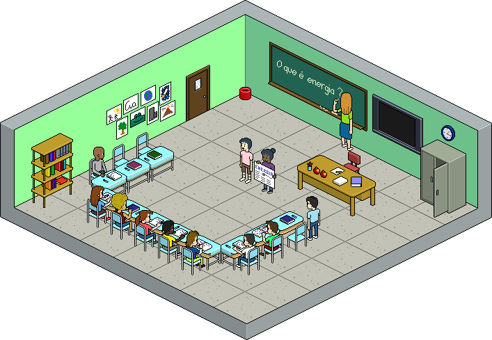
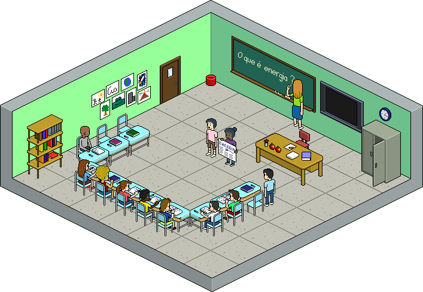
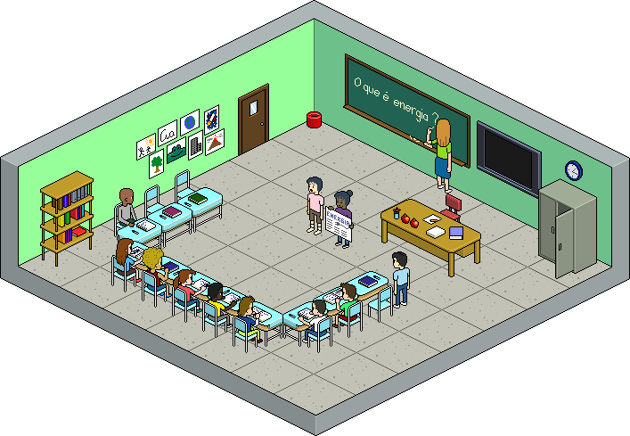

Nauka
Wiedza
Doświadczenie
Umiejętności
W jaki sposób przechowywać te informacje, aby były one nam lub innym osobom przydatne?
TinCan API
(Experience API)
Podmiot Orzeczenie Dopełnienie
" Mateusz przeczytał artykuł "

"
Mateusz
przeczytał
artykuł
"
"
Darek
skomentował
artukuł Moniki
"
"
Monika
napisała
artukuł o słoniach
"
PodmiotOsoba lub grupa osób
 OrzeczenieAkcja
DopełnienieCoś czego się uczymy
OrzeczenieAkcja
DopełnienieCoś czego się uczymy
 WynikMierzalny wynik wykonanej czynności
KontekstPozostałe informacje
WynikMierzalny wynik wykonanej czynności
KontekstPozostałe informacje
OrzeczenieAkcja
DopełnienieCoś czego się uczymy
WynikMierzalny wynik wykonanej czynności
KontekstPozostałe informacje
Zalety
- Brak ograniczenia co do typu osiągnięcia
- Brak ścisłego powiązania z systemem uczącym
- Współdzielenie swoich osiągnięć z innymi
Zalety c.d.
- REST API
- Raportowanie wyników zagregowanych dla dowolnej kolejkcji wyników
- Uczenie adaptacyjne
- ...
Przykłady zastosowania
- Aplikacją rejestrująca uczestników na konferencję
- Serwis udostępniający filmiki instruktażowe
- LMS - przechowywanie ocen
- Wtyczka do przeglądarki - "Przeczytałem to"
Dziękuję
Pytania?